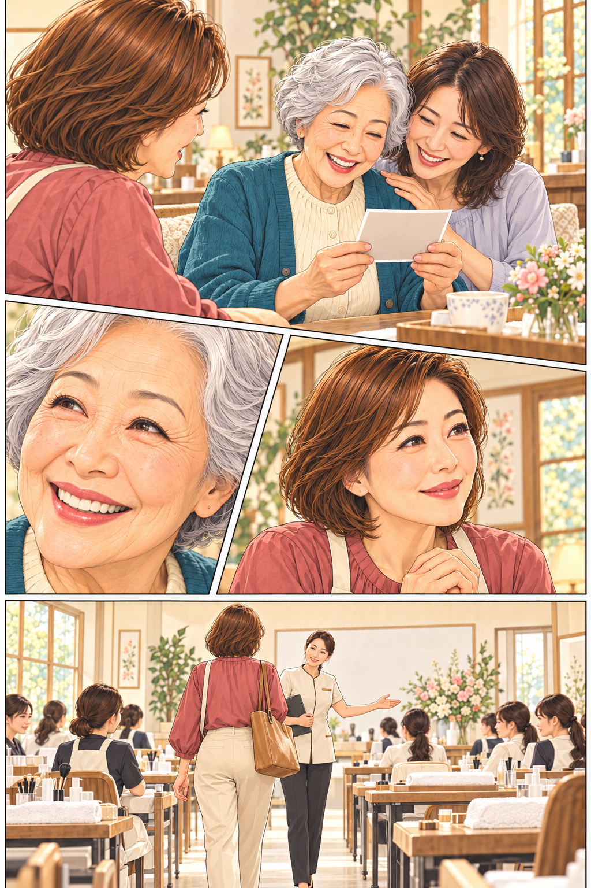
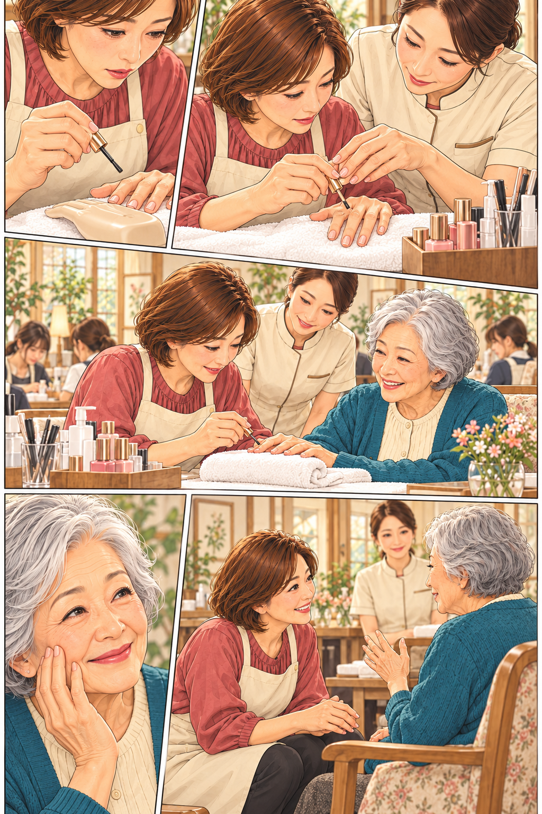
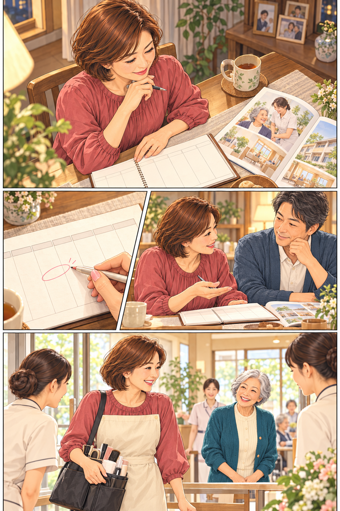
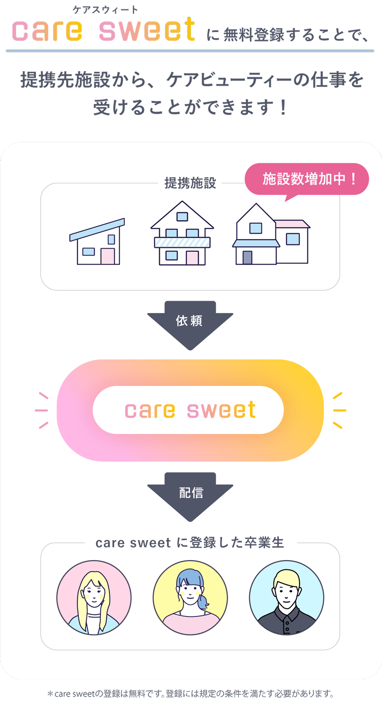

美容を、基礎から
ケアネイル、ケアメイク、ケアエステなど。現役のプロ講師から、道具の扱いと技術を学びます。
その人の「好き」に、あなたの手を。
色を選ぶ。そっと、ひと塗り。
その先に、楽しみになる一枚がある。
「今日は家族と写真。
指先も、好きな色にしたくて。」
光る爪を指でなぞってください。
好きなところまで塗ったら、写真へ。
ボタンで、ひと塗りずつ進められます。
一枚の写真から、続いていく。
「家族に見せるの、
楽しみだったの。」そのひと言が、
私にも残った。

「この日を、
楽しみにしていたの。」
こんな時間を
届けられるんだ。
私も、もっと知りたい。
この関わり方を。
その気持ちが、
学ぶきっかけになる。
「介護 × 美容」を学ぶ学校
ネイルが初めてでも。
まずは、基礎と接し方を知るところから。

初めてでも、
できるかな。
「一緒に、
持ち方から。」
手を動かしながら、
少しずつ。
「今日は、どんな色を
楽しみたいですか？」
この場面で学んでいること

ケアネイル、ケアメイク、ケアエステなど。現役のプロ講師から、道具の扱いと技術を学びます。
高齢者ケアの知識、認知症コミュニケーションなど。「何をするか」の前に、希望や状態に目を向ける視点を。
教室で覚えたことを現場実習へ。人との距離、声のかけ方、手の添え方を、実際の関わりから学びます。

介護や美容に関係のない仕事から学ぶ方、主婦の方も通っています。未経験の方へも、プロ講師が基礎基本から指導します。
ブランクや生活のことも、
自分に合う学び方を考える材料に。
暮らしも、これからも。

仕事も、家のことも。
続けながら学べるかな。
週の予定を、
ひとつずつ。
「この曜日なら、
どうだろう。」
学んだ先にも、
誰かと向き合う時間がある。
通い方を具体的にする
働きながら学ぶ方にも配慮したカリキュラム。出席できないときは、他の曜日への振替制度があります。
東京・横浜・大宮・名古屋
心斎橋・梅田・福岡
コース・曜日・期間、振替の条件は希望校へご確認ください。
資料で全体を知ってから、
無理のない選び方を考えられます。
学んだあとを、一人で考えない。

卒業生が登録できる「care sweet」。学校の提携施設との接点を、卒業後の活動へつなげます。
授業には、セルフブランディング、営業ツール作成、SNS・WEBマーケティングなど、活動に必要な学びもあります。

施設紹介や活動支援は、仕事・収入を保証するものではありません。
実際に学んだ方の、その先
名古屋校の西村みかさんは、看護師としてのブランクを経て入学。家族の協力を得ながら1年間通学し、卒業後はマルシェなどで地域とのつながりを広げていると話しています。
2023年入学・30代／公式インタビューの要約。創作漫画の人物とは別の方です。
公式の卒業生インタビューを読む ↗未経験の方や、さまざまな経歴の方が学んでいます。基礎基本からの指導があるため、まずは学ぶ内容をご確認ください。
美容・高齢者ケア・活動のための内容を学びます。受講期間やカリキュラムはコースによって異なるため、希望校の案内で比較してください。
学費の総額・支払い方法、通える曜日や期間を、資料と公式の案内で確認できます。今の生活と照らし合わせながら検討してください。
まずは、学校を知るところから。
学ぶ内容、通い方、学費。
資料で確かめて、ゆっくり考えてください。
公式の資料請求フォームへ移動します。
資料は郵送です。住所などの入力が必要です。